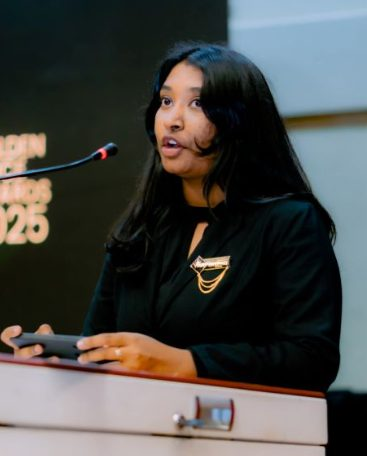
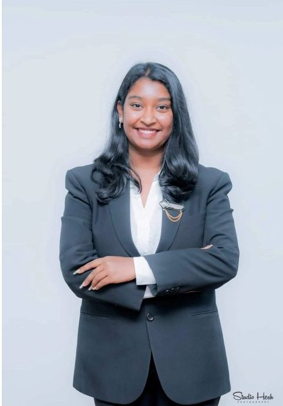
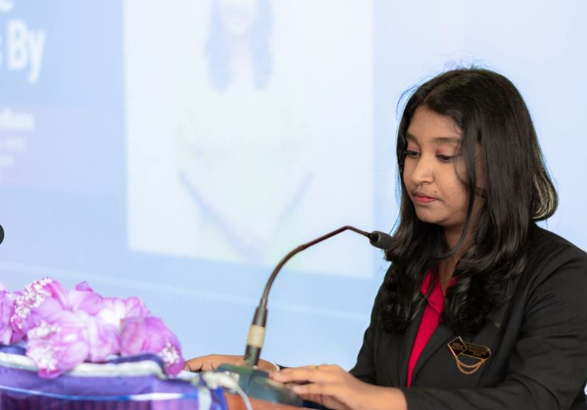
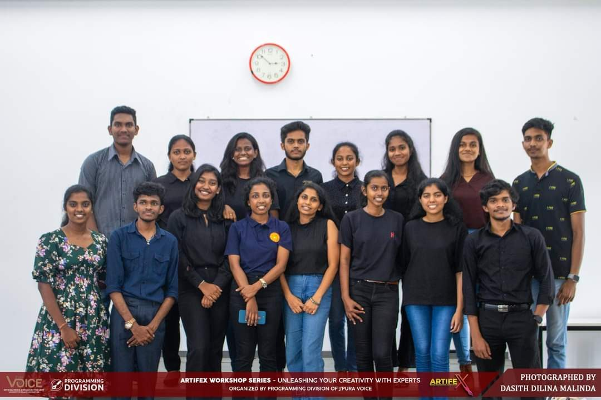
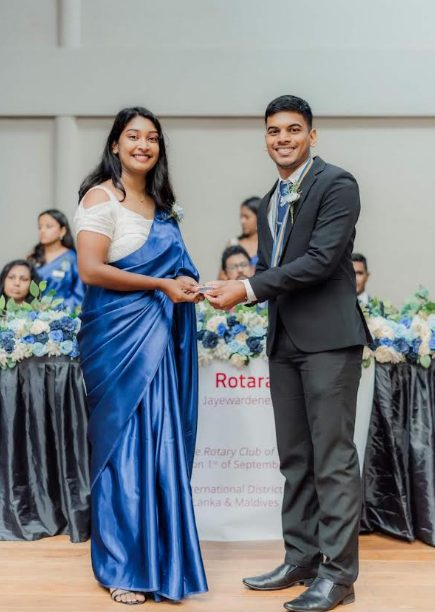
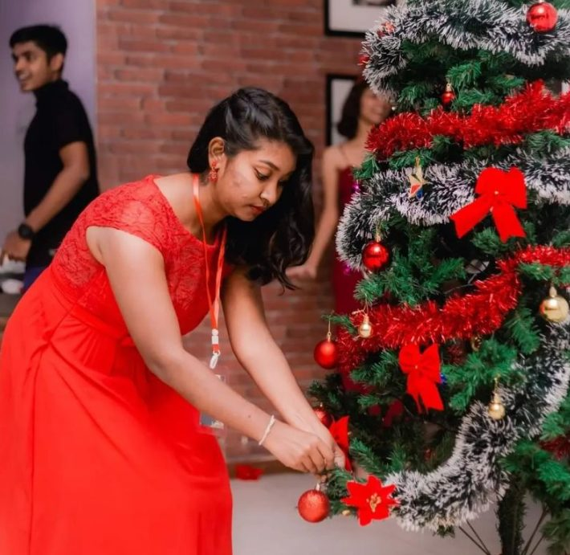
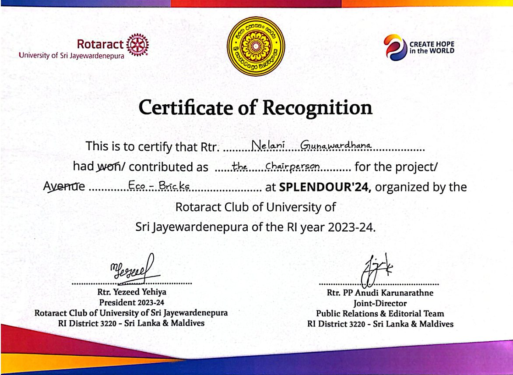
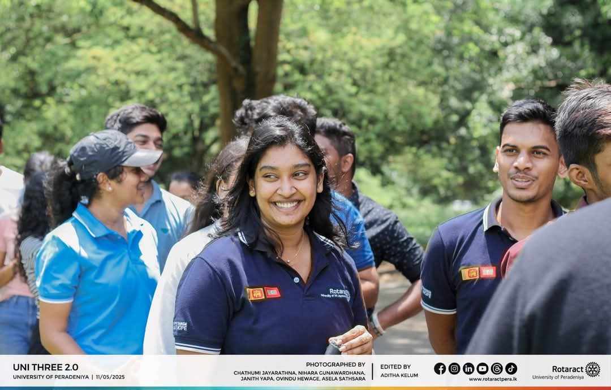
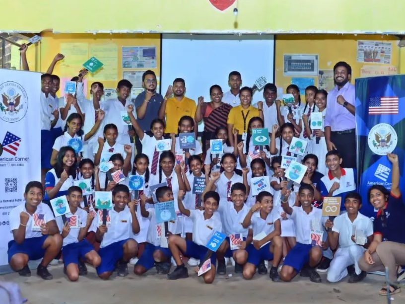

Home / Excellence in Co-curricular & Extracurricular
Co-curricular & Extracurricular
Leadership, Volunteering & Extracurricular Activities
Media, Rotaract, society and community leadership.
| Organisation / Unit | Position / Role | Period | Key Contributions & Achievements |
|---|---|---|---|
| J'PURA VOICE, The Official Media and Broadcasting Unit of University of Sri Jayewardenepura | Secretary View on LinkedIn ↗Photos ↓ | Term 2025 / 2026 | Executive leadership of the official media unit, overseeing corporate partnerships, programming, and university-wide broadcasting. |
| J'PURA VOICE, The Official Media and Broadcasting Unit of University of Sri Jayewardenepura | Divisional Head — Programming Division View on LinkedIn ↗Photos ↓ |
Term 2024 / 2025 | Led content strategy and team execution for media projects across the university. |
| J'PURA VOICE, The Official Media and Broadcasting Unit of University of Sri Jayewardenepura | Project organizer and executor – DesignXcellence 2.0 View on LinkedIn ↗Photos ↓ |
Term 2024 / 2025 | DesignXcellence—a premier creative competition designed to empower students, sharpen their skills, and earn real recognition across Graphic Designing, Video Editing, and Content Writing in all three languages. Unlike traditional single-submission contests, DesignXcellence emphasizes portfolio-ready craft by guiding participants through a structured 3-round journey where they iterate on their work based on feedback from expert academic and industry judges before showcasing their final masterpieces at our Grand Prize Giving Ceremony. Organized to celebrate creative work that is often under-recognised in purely academic environments, this initiative bridges student talent with real-world industry standards, builds vital discipline and deadline management, and fosters a vibrant, growing creative community across the university. |
| J'PURA VOICE, The Official Media and Broadcasting Unit of University of Sri Jayewardenepura | Project organizer and executor – Artifex 2.0 | Term 2024 / 2025 | ARTIFEX is an annual flagship workshop organized by J'PURA VOICE, the Official Media and Broadcasting Unit of the University of Sri Jayewardenepura. Designed to empower aspiring young creators, this skill-building initiative focuses on three essential pillars of modern media: Content Writing, Graphic Designing, and Video Editing. Through hands-on sessions and expert-led guidance, ARTIFEX equips students with practical techniques, creative confidence, and industry insights to elevate their media and design skills. |
| J'PURA VOICE, The Official Media and Broadcasting Unit of University of Sri Jayewardenepura | Project Chairperson — Artifex Photos ↓ |
Term 2023 / 2024 | Chaired major flagship programming workshops and events. |
| J’PURA VOICE (USJ) | Finance Manager – DesignXcellence 1.0 | Term 2023 / 2024 | Served as the financial backbone of the project, ensuring that every stage of the competition was executed seamlessly within budget and with complete fiscal transparency. I drafted the official budget proposal, carefully estimating and regulating expenses across all three competition rounds through to the Grand Prize Giving Ceremony. My role spanned securing and tracking sponsorships, managing disbursements for prize money, judge honorariums, and promotional materials, as well as handling vendor invoices and team reimbursements. By maintaining meticulous financial records and delivering a comprehensive post-event audit report to J'PURA VOICE leadership, I successfully bridged creative ambition with sound financial management to make the project a resounding success. |
| J'PURA VOICE, The Official Media and Broadcasting Unit of University of Sri Jayewardenepura | Task Master – Content Writing – Programming Division | Term 2023 / 2024 | As the Task Master for Content Writing at J'PURA VOICE, the Official Media and Broadcasting Unit of the University of Sri Jayewardenepura, I guided the team behind the club’s written content and social media presence. In this role, I managed the day-to-day writing workflow, crafting engaging captions, mentoring our writer crew, and carefully proofreading posts to keep our voice clear, polished, and consistent. I also planned official blog posts and creative feature content, while leading the dedicated Convocation Caption Crew to deliver real-time posts during graduation ceremonies. Through close teamwork and a focus on quality, I helped ensure every caption and article represented J'PURA VOICE with accuracy and energy. |
| Rotaract Club of USJ | Assistant Secretary View on LinkedIn ↗Photos ↓ |
2024 / 2025 | Co-managed club administration, executive reporting, and multi-avenue project coordination. |
| Rotaract Club of USJ | Assistant Director — International Service | 2023 / 2024 | Co-led international exchange projects, awarded Best Member of International Service. |
| Rotaract Club of USJ | Project Chairperson — A Memorable December 5.0 View on LinkedIn ↗Photos ↓ |
2023 / 2024 | Spearheaded club service initiative, awarded Most Outstanding Club Service Initiative. |
| Rotaract Club of USJ | Project Chairperson — Eco Bricks Photos ↓ |
2023 / 2024 | Led environmental initiative, awarded Most Innovative Project of RI Year. |
| Rotaract Club of USJ | Member – Content Writing Crew – Uni Three View on LinkedIn ↗Photos ↓ |
2023 / 2024 | I contributed to shaping the project's written identity across social media and official communication channels. In this role, I drafted engaging captions, brainstormed creative post concepts, and wrote event coverage write-ups to keep our audience informed and involved. Working closely with the editorial team, I helped refine content through careful proofreading to maintain a consistent, polished tone while effectively communicating key updates and project milestones. |
| Zoologists Association | Assistant Secretary | 2024 | I assisted in drafting agendas, maintaining official records, and compiling accurate minutes for general and executive meetings. I also helped coordinate event logistics for academic lectures, guest speaker sessions, and field trips, while managing the membership database and drafting official communications to keep members informed. Through organized record-keeping and proactive coordination across subcommittees, I helped maintain seamless internal operations and successful event delivery. |
| Botany and Plant Biotechnology Society | Committee Member | 2024 | actively contributed to organizing and executing academic, social, and field-based events that promoted student engagement with the plant sciences. In this role, I collaborated with executive officers and subcommittees to coordinate logistics for workshops, guest lectures, plant sales, and field excursions. I also assisted with internal communications, event promotions, and on-ground execution, helping foster a collaborative community for students passionate about botany, biotechnology and microbiology |
Community Outreach & Projects
- Community Outreach Programme organized by American Corner Kandy in Collaboration with MAS Active Contourline Pallekale Kandy, held a programme for school students in the aim of celebrating World Ozone Day 2023 based on the topic “climate change and its impact on earth”. This was not just a typical programme but a programme which aided students to build up their team building and team playing skills plus aided them to express their own ideas to the audience. This was an enormous opportunity for them to enhance their knowledge on how to take care of the planet earth.
View on LinkedIn ↗Photos ↓ - Organizing Committee member, Social Inclusion and Fellowship Event 2022 — Sri Lanka Red Cross Society.
- Uni-Three Project engagement representing Rotaract Club of University of Sri Jayewardenepura (2024).
Photos ↓ - Executive Board Overlooking member for Sihina Yathra project organized by Rotaract Club of University of Sri Jayewardenepura (2024).
Photos ↓
Other Projects Conducted
Planning and Organization of the project phases and Execution with the Directors of Environment Service Avenue:
- Aquatica Wave 5.0 — Environment Service Avenue, Rotaract Club of USJ, RI year 2024-25
View on LinkedIn ↗ - Animalia 5.0 — Environment Service Avenue, Rotaract Club of USJ, RI year 2024-25
- Earth Reborn — Environment Service Avenue, Rotaract Club of USJ, RI year 2024-25
Leadership in pictures
Moments, certificates and team photos from each role and project. Tap an album to browse.























